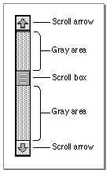
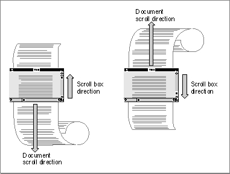
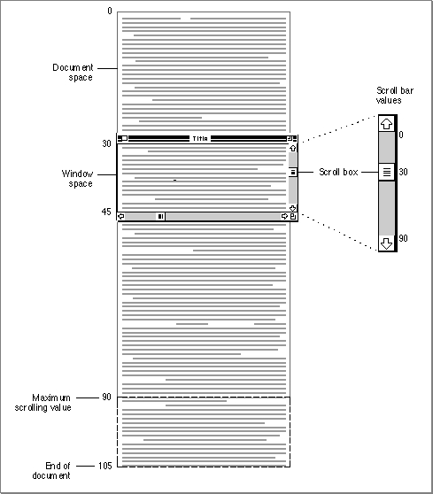

Scroll Bars
Scroll bars change what portion of a document the user can view within the document's window. A scroll bar is a light gray rectangle with scroll arrows at each end. Inside the scroll bar is a square called the scroll box. The rest of the scroll bar is called the gray area. Windows can have a horizontal scroll bar, a vertical scroll bar, or both. A vertical scroll bar lies along the right side of a window. A horizontal scroll bar runs along the bottom of a window. Figure 5-4 shows the parts of a scroll bar.Figure 5-4 A vertical scroll bar

If the user drags the scroll box, clicks a scroll arrow, or clicks anywhere in the gray area, your application "moves" the document accordingly; use Control Manager routines as appropriate to move the scroll box. Figure 5-5 illustrates, and the next few sections explain, several key behaviors of a scroll bar.
A scroll bar represents the entire document in one dimension, top to bottom or right to left. The scroll box shows the position, relative to the whole document, of the visible portion of the document. If the scroll box is halfway between the top and bottom of the scroll bar, then what the user sees should be about halfway through the document. Use the
SetControlValueorSetControlMaximumprocedure to move the scroll box whenever your application resizes a window and whenever it scrolls through a document for any reason other than responding to the user dragging the scroll box.After the user drags the scroll box, the Control Manager redraws the scroll box in its new position. You then use the
GetControlValuefunction to determine the position of the scroll box, and you display the appropriate portion of the document. By dragging the scroll box, the user can move quickly through the document. For example, to see the beginning of the document, the user drags the scroll box to the top of the scroll bar. Your application then scrolls to the top of the document.At either end of the scroll bar are scroll arrows that indicate the direction of movement through the document. For instance, when the user clicks the top scroll arrow, your application needs to move toward the beginning of the document. Thus, the document moves down, seemingly in the opposite direction. By clicking the scroll arrow, the user tells your application, "Show me more of the document that's hidden in this direction."
Your application uses the
SetControlValueprocedure to move the scroll box in the direction of the arrow being clicked. In this way, the scroll box continues to represent
the approximate position of the visible part of the document in relation to the whole document. For example, when the user clicks the top scroll arrow, you move the document down to bring more of the top of the document into view, and you move the scroll box up, as illustrated in Figure 5-5.Figure 5-5 Using the scroll box and scroll arrows

Each click of a scroll arrow should move the document a distance of one unit in the chosen direction. Your application determines what one unit equals. For example, a word processor should move one line of text for each click in the arrow. A spreadsheet should move one row or one column, depending on the direction of the arrow. To ensure smooth scrolling effects, it's usually best to specify the same size units within a document. When the user holds down the mouse button while the cursor is in a scroll arrow, your application should continuously scroll through the document in the indicated direction until the user releases the mouse button or your application has scrolled as far as possible.
The rest of the area within the scroll bar--excluding the scroll box and the scroll arrows--is called the gray area. When the user clicks the gray area of a scroll bar, your application should move the displayed area of the document by an entire window of information minus one scroll unit. For example, if the window displays 15 lines of text and the user clicks the gray area below the scroll box, your application should move the document up 14 lines so that the bottom line of the previous view appears at the top of the new view. (This retained line helps the user see the newly displayed material in context.) You must also move the scroll box an appropriate distance in that direction. For example, when the user clicks the gray area below the scroll box, move the document view by one window toward the bottom of the document and use
SetControlValueto move the scroll box accordingly.When your application scrolls through a document--for example, when the user manipulates a scroll bar--your application must move the document's coordinate space in relation to the window's coordinate space. Your application uses the scroll box to indicate the location of the top of the displayed portion of the document relative to the rest of the document.
For example, if a text window contains 15 lines of text and the user scrolls 30 lines from the top of the document, the scroll box should be set to a value of 30. The window displays all of the lines between line 30 and line 45, as shown in Figure 5-6 on the next page. The scroll box always indicates the displacement between the beginning of the document and the top of the displayed portion of the document.
To prevent the user from scrolling past the edge of the document and seeing a blank window, you should--for a vertical scroll bar--allow the document to scroll no farther than the length of the document minus the height of the window, excluding the 15-pixel-deep region for the horizontal scroll bar at the bottom edge of the window. Likewise, for a horizontal scroll bar, you should allow the document to scroll no farther than the width of the document minus the width of the window--here, too, excluding the 15-pixel-wide region for the vertical scroll bar at the right edge of the window.
Figure 5-6 Spatial relations between a document and a window, and their representation by
a scroll bar
For example, the document shown in Figure 5-6 is 105 lines long. So that the last 15 lines will fill the window when the user scrolls to the end of the document, the application does not scroll beyond 90 lines. Because the user has scrolled to line 30 of a maximum
90 lines, the scroll box appears a third of the way down the scroll bar."Scrolling Through a Document" beginning on page 5-40 describes in detail how to scroll through a document in a window.